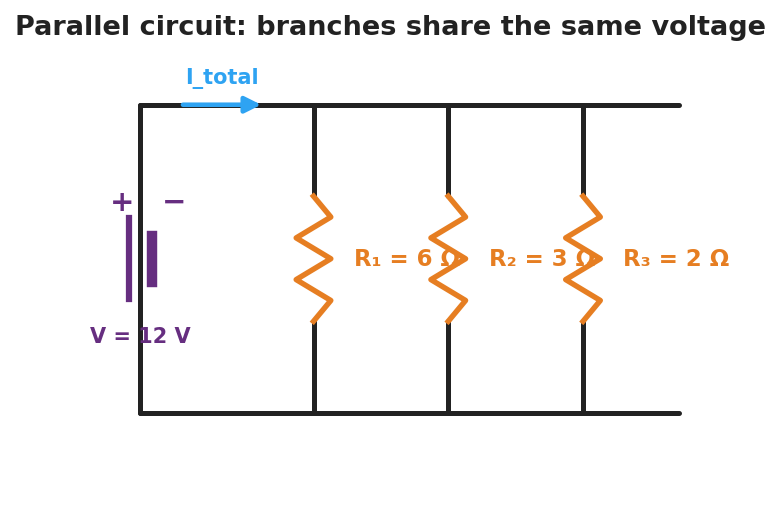
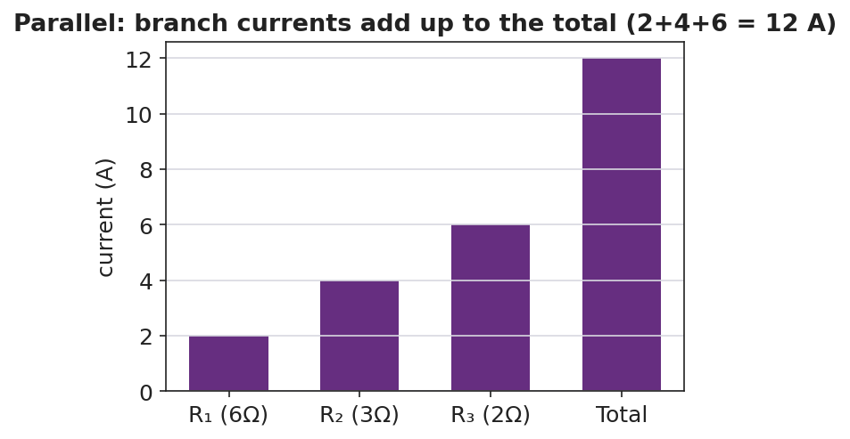

Unit: Current Electricity — Lesson 04: Parallel Circuits
Phenomenon
Three lamps are plugged into a power strip — all lit. You unplug one, and the other two stay bright. Yesterday, removing one bulb from a series string killed the whole string. Something is wired differently here.

Driving Question
How can one lamp turn off while the others stay on?
Notice & Wonder
Compare today's power-strip lamps with yesterday's series string. List two things you notice and two things you wonder.
Initial Model
Sketch three lamps each wired directly across the same battery (three branches). Predict: does each lamp get the full battery voltage or a share of it? Does the same current go through all three?
Investigate
This is a 12 V battery with three parallel branches. Set each branch resistor. Every branch sees the full 12 V, so each branch current is I = V ÷ R. The branch currents add to the total, and the equivalent resistance follows 1/R_total = 1/R₁ + 1/R₂ + 1/R₃.
Same 12 V across each branch · branch currents add to I_total = 12.0 A · 1/R_total = Σ(1/R) gives R_total = 1.00 Ω (smaller than any branch)

Make It Make Sense
- Two 4 Ω resistors are in parallel across an 8 V battery. Find the current in each branch and the total current.
- For those two 4 Ω resistors, find the equivalent resistance using 1/R_total = 1/4 + 1/4.
- You add a fourth lamp in parallel. Does the total current from the battery go up or down? Why?
Stuck? Sentence frame
"Each branch gets the ___ voltage, so its current is I = V ÷ R, and the branch currents ___ to give the total."
Key Vocabulary (max 3)
- parallel circuit — a circuit with more than one path for charge, so every branch has the same full source voltage across it
- branch — one of the separate parallel paths between the same two points; its current is set by its own resistance (I = V ÷ R)
- equivalent resistance — the single resistance that could replace the branches; in parallel, 1/R_total = 1/R₁ + 1/R₂ + … (smaller than any branch)
Revise Your Model
Return to your Initial Model. Did each lamp get the full voltage? Rewrite your explanation for why unplugging one lamp leaves the others lit, using parallel and branch.
Return to the Phenomenon
Explain, in one sentence using parallel and branch, why unplugging one lamp leaves the others lit: the lamps are in parallel — each on its own branch — so opening one branch leaves the other branches (and their full voltage) untouched.
Exit Ticket + Closing Reflection
- A 12 V battery is connected to two parallel resistors: 4 Ω and 6 Ω.
(a) What is the voltage across each resistor? (b) Find the current in each branch. (c) Find the total current and the equivalent resistance (use 1/R_total = 1/4 + 1/6). - Reflection: What surprised you most about parallel circuits compared with yesterday's series circuits?